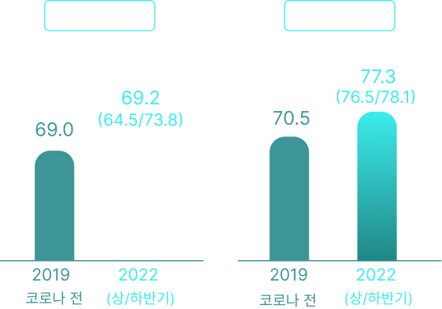
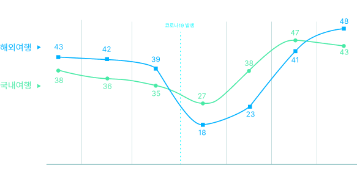
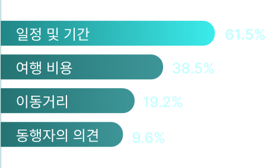

APP DESIGN PROCESS
더 나은 여행 경험을 제공하는 모바일 어플리케이션
HOW TO MAKE MY COOLEST MOMENTS
여행 계획을 더욱 개인화하고 편리하게 만들어 사용자가 자신의 취향에 맞는 최고의 여행을 경험할 수 있도록 하는 것입니다. 여행지 선택부터 예약, 현지 활동까지의 모든 과정을 쉽고 직관적인 인터페이스로 지원합니다. 이를 통해 여행자는 복잡한 계획 과정을 최소화하고, 자신에게 가장 적합한 여행을 간편하게 설계할 수 있습니다.
코로나19 엔데믹 이후 여행 수요가 폭증하며 한국인의 해외여행과 외국인의 한국여행 수요가 증가한 데 따른 것으로 풀이되며
올해 전 세계 여행·관광산업이 코로나19 팬데믹 이전 수준을
회복에 근접할 것으로 전망했다.
코로나 전 후 국내 여행 경험 및 계획 보유율
2년 만에 코로나 이전 수준으로 회복했음을 보여준다.
여행계획률이 올라감에 따라 여행 열망이 되살아났음을 알 수 있다.
국내/해외 여행비 지출의향
2017년 이후 7년간의 결과를 코로나19 발생 전후 중심으로 비교했다 .
‘여행비 지출의향’은 향후 1년간 여행비용을
지난 1년보다 ‘더 쓸 것’이라고 응답한 비율이다.
현대 여행자들은 패키지여행에서 벗어나 자신만의 독특한 경험을 추구하며, 특히 밀레니얼과 Z세대는 현지 문화를 깊이 체험하고자 합니다.
코로나 이후 여행 트렌드는 면세점 쇼핑에서 벗어나 지역 명소와 볼거리에 집중하고 있습니다.
국내/해외 계획 할 때
가장 중요하게 고려하는 요소
자유투어 홈페이지 방문 고객 대상, 8월 한 달 간 여행 동향 설문조사
2년 만에 코로나 이전 수준으로 회복했음을 보여준다. 여행계획률이 올라감에 따라 여행 열망이 되살아났음을 알 수 있다.
맛집 및 여행 정보 검색 시 중요한 것
540명의 대한민국 MZ세대(2000년대생~1980년대생)
2년 만에 코로나 이전 수준으로 회복했음을 보여준다. 여행계획률이 올라감에 따라 여행 열망이 되살아났음을 알 수 있다.
숙박예약
이동수단
레저/티켓 예약
여행지
여가 활동
어플에 나와있는 숙소는 감성적인 반면에
주변 편의 시설이 조금 부족한 느낌...
이벤트나 할인쿠폰 많이 주는 앱을
더 많이 사용하긴 해요
국내보단 해외 위주라는 이미지 때문에
국내여행 할 땐 잘 안보게 돼요
어플마다 가격이 달라서
비교하면서 더 저렴한 곳 찾아서 가요
리뷰가 괜찮아서 갔는데 이미지랑 너무 다르고
편의 시설도 너무 별로였던 기억이...
초특가라고 홍보를 했는데 다른 사이트가
더 저렴 한 거 보고 신뢰가 떨어졌어요
예약 할 땐 괜찮았는데
막상 여행 가니까 먹통이네요
고객센터 연결이 너무 힘들어요
🤯숙소나 체험 활동에 여러가지 필터가
있었음 좋겠어요
사용자들이 여행을 계획하고 실행하는 과정에서 발생하는 불편함을 최소화하고,
더 나은 여행 경험을 제공하는 퍼스널케어 서비스를 제공합니다.